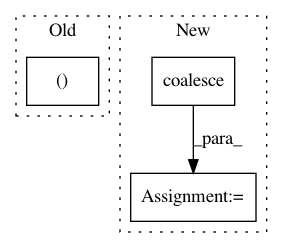

7f69a4ff73a73e4b2da4f554ee4640e185aa19a1,test/utils/test_coalesce.py,,test_coalesce,#,5
Before Change
expected_output = [[0, 1, 1, 2], [1, 0, 1, 0]]
expected_perm = [1, 0, 2, 4]
output, output_perm = coalesce(torch.stack([row, col], dim=0))
assert output.tolist() == expected_output
assert output_perm.tolist() == expected_perm
After Change
out, _ = coalesce(edge_index)
assert out.tolist() == [[0, 1, 1, 2], [1, 0, 1, 0]]
out = coalesce(edge_index, edge_attr)
assert out[0].tolist() == [[0, 1, 1, 2], [1, 0, 1, 0]]
assert out[1].tolist() == [[10, 12], [12, 14], [5, 6], [9, 10]]
In pattern: SUPERPATTERN
Frequency: 3
Non-data size: 3
Instances
Project Name: rusty1s/pytorch_geometric
Commit Name: 7f69a4ff73a73e4b2da4f554ee4640e185aa19a1
Time: 2018-05-20
Author: matthias.fey@tu-dortmund.de
File Name: test/utils/test_coalesce.py
Class Name:
Method Name: test_coalesce
Project Name: rusty1s/pytorch_geometric
Commit Name: 640cb49c5dcfa0b0c1003394b910ad6cf8f69588
Time: 2019-05-29
Author: matthias.fey@tu-dortmund.de
File Name: torch_geometric/data/data.py
Class Name: Data
Method Name: is_coalesced
Project Name: rusty1s/pytorch_geometric
Commit Name: d8a075668b6e9cdf4c08f6c7285e5c7d2fbf5332
Time: 2017-10-17
Author: matthias.fey@tu-dortmund.de
File Name: torch_geometric/graph/geometry.py
Class Name:
Method Name: edges_from_faces